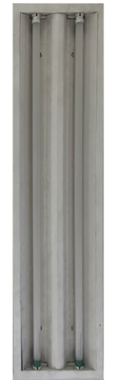
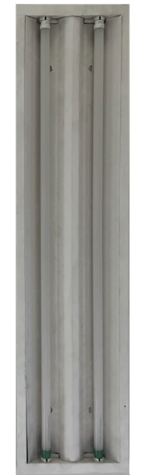
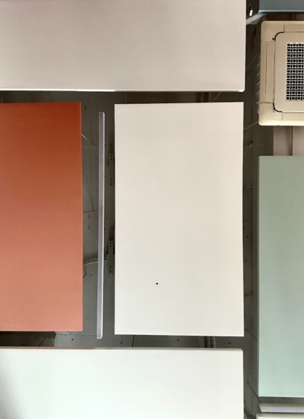
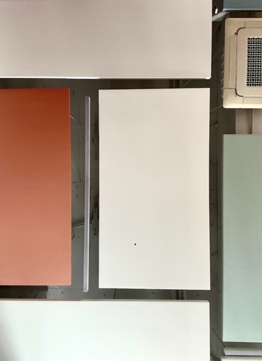
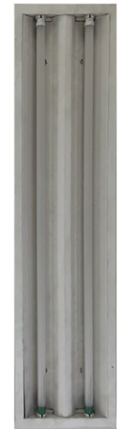
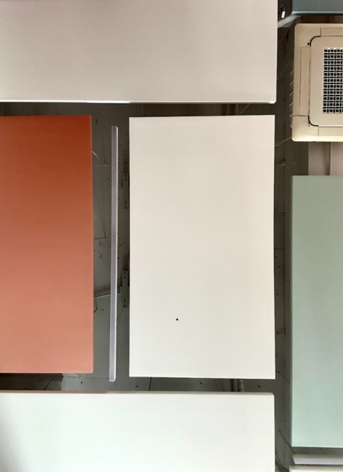

 

1-1. 사각형은 미술과 디자인의 기본적인 조형 요소(점, 선, 면, 형, 색, 명암, 질감, 공간 등) 중 '형(Shape)' 또는 '면(Plane)'의 한 종류로,
안정감과 질서, 구조적 느낌을 주며, 네 개의 선과 네 개의 꼭짓점으로 구성된 닫힌 평면을 의미합니다.
사각형은 단순한 직사각형을 넘어 다양한 크기와 비율로 변형되어 비례, 대비, 반복, 균형, 강조 등의 조형 원리를 표현하는 데 활용되며,
인간의 삶과 문명에서 가장 기본적인 형태 중 하나입니다.

